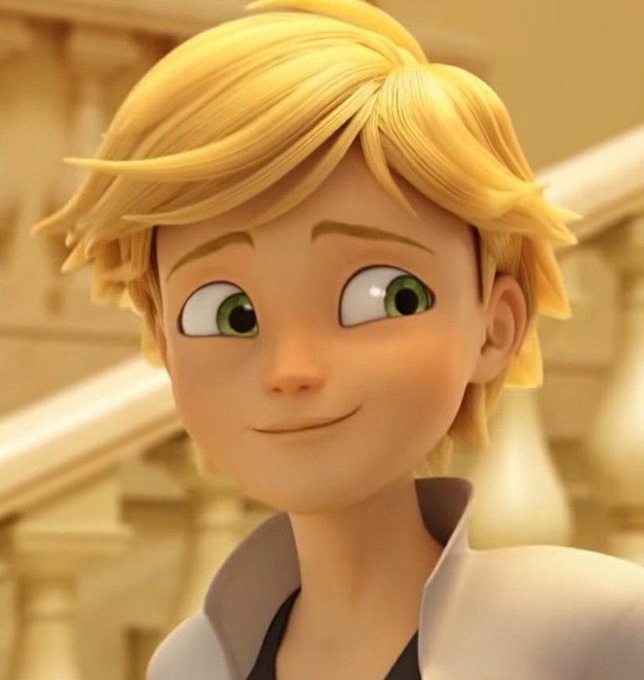
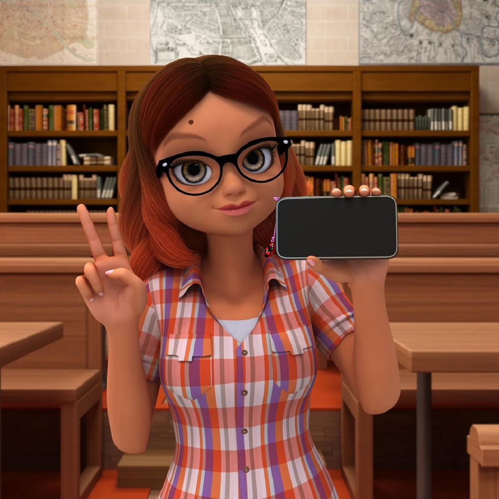
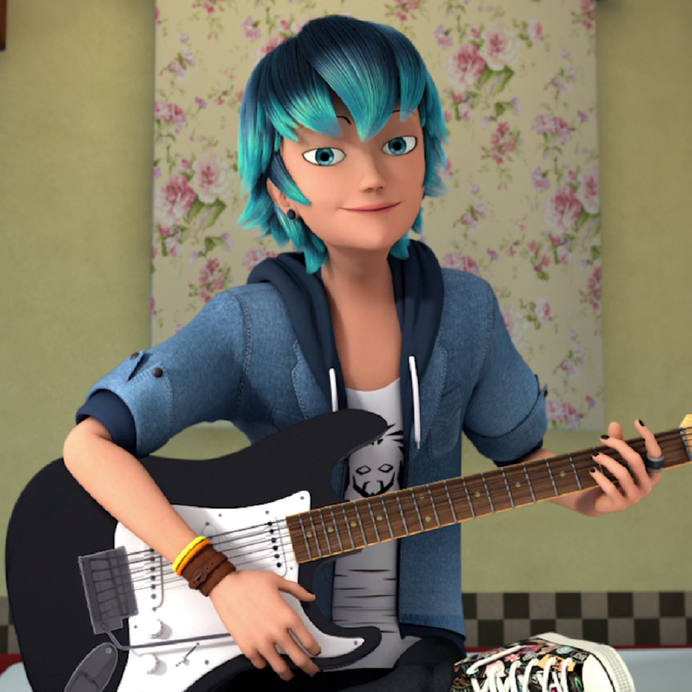

Marinette

Adolescente soñadora y superheroína de París llamada Ladybug
Adrien

Adolescente solitario y superhéroe de París llamado Chat Noir
Alya

Adolescente optimisma, mejor amiga de Marinette
Nino

Adolescente divertido, mejor amigo de Adrien
Kagami

Adolescente esgrimista amiga de Adrien
Luka

Guitarrista amigable, amigo de Marinette